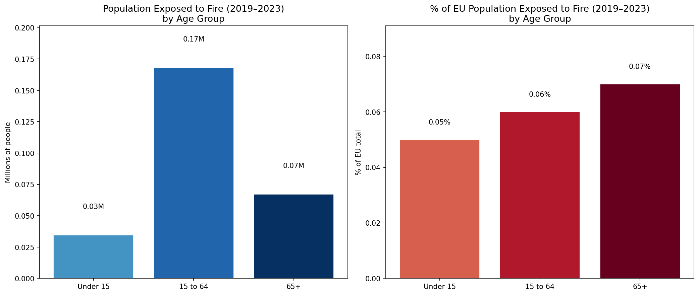
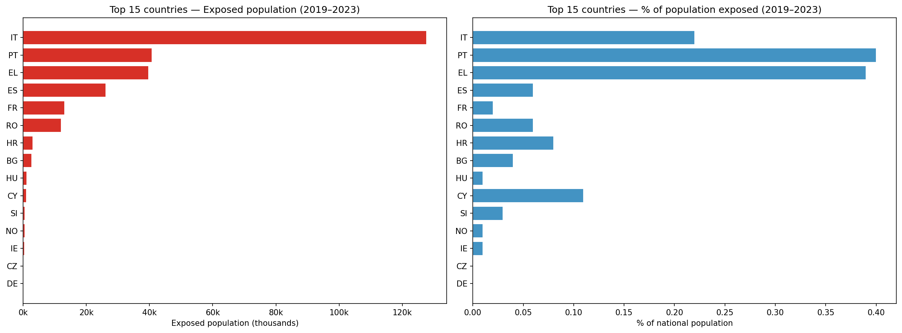
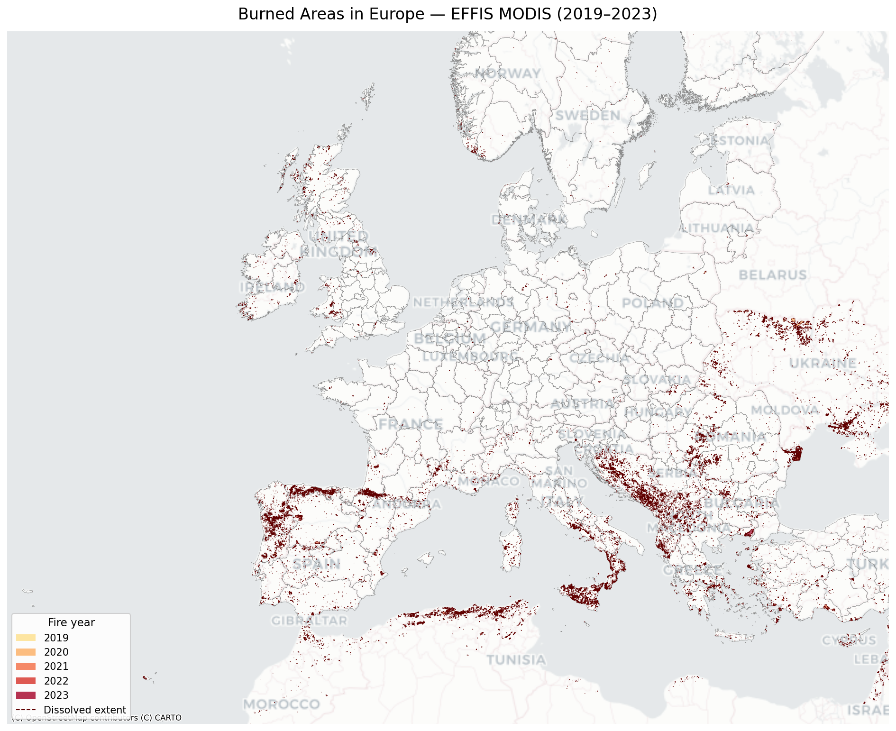
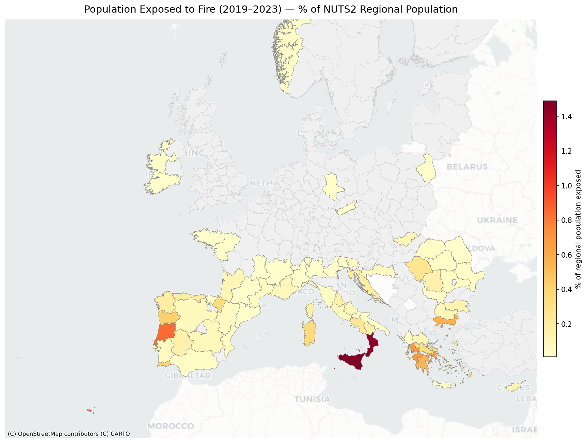

How many people live in areas burned by wildfires between 2019 and 2023? A spatial analysis combining satellite fire data with the Eurostat Census 2021 population grid — broken down by age group, NUTS2 region, and country.
Across Europe, roughly 270,000 people lived within areas that burned at least once between 2019 and 2023. Fire perimeters were dissolved into a single layer before the analysis, so individuals living in areas affected by multiple fires are counted only once.

Italy accounts for nearly half of all exposed people in absolute terms, largely driven by Sicily and Calabria. Portugal and Greece show the highest exposure relative to their national populations.
| Country | Exposed total | National population | % total | Exposed <15 | % <15 | Exposed 15–64 | % 15–64 | Exposed 65+ | % 65+ |
|---|---|---|---|---|---|---|---|---|---|
| 🇮🇹 Italy | 127,711 | 58,420,557 | 0.22% | 16,340 | 0.22% | 81,512 | 0.22% | 29,859 | 0.21% |
| 🇵🇹 Portugal | 40,753 | 10,257,175 | 0.40% | 4,084 | 0.31% | 24,285 | 0.37% | 12,384 | 0.52% |
| 🇬🇷 Greece | 39,726 | 10,237,698 | 0.39% | 5,561 | 0.40% | 24,394 | 0.37% | 9,858 | 0.42% |
| 🇪🇸 Spain | 26,153 | 46,828,861 | 0.06% | 2,555 | 0.04% | 16,191 | 0.05% | 7,420 | 0.08% |
| 🇫🇷 France | 13,068 | 65,189,893 | 0.02% | 2,245 | 0.02% | 8,051 | 0.02% | 2,772 | 0.02% |
| 🇷🇴 Romania | 12,092 | 19,053,261 | 0.06% | 1,688 | 0.05% | 7,474 | 0.06% | 2,930 | 0.08% |
| 🇭🇷 Croatia | 3,095 | 3,786,907 | 0.08% | 461 | 0.09% | 1,881 | 0.08% | 717 | 0.08% |
| 🇧🇬 Bulgaria | 2,703 | 6,448,818 | 0.04% | 847 | 0.09% | 1,454 | 0.04% | 402 | 0.03% |
| 🇨🇾 Cyprus | 1,055 | 917,722 | 0.11% | 107 | 0.08% | 678 | 0.11% | 261 | 0.17% |
| 🇭🇺 Hungary | 1,161 | 9,607,928 | 0.01% | 236 | 0.02% | 734 | 0.01% | 196 | 0.01% |

The map below shows all burned area polygons from the EFFIS MODIS dataset between 2019 and 2023, coloured by fire year. The dashed outline shows the dissolved union used to compute population exposure.

For each NUTS2 region, the dissolved fire perimeter was intersected with the regional boundary and population was summed within the intersection. The choropleth below shows the share of each region's population living within burned areas.

| NUTS2 code | Region | Country | Exposed population | Regional total | % exposed |
|---|---|---|---|---|---|
| ITG1 | Sicilia | Italy | 70,559 | 4,727,148 | 1.49% |
| ITF6 | Calabria | Italy | 25,923 | 1,799,824 | 1.44% |
| PT30 | Madeira | Portugal | 2,142 | 246,406 | 0.87% |
| PT16 | Centro | Portugal | 18,968 | 2,232,019 | 0.85% |
| EL30 | Attiki | Greece | 25,036 | 3,795,942 | 0.66% |
| EL51 | Anatoliki Makedonia, Thraki | Greece | 3,110 | 548,011 | 0.57% |
| ITG2 | Sardegna | Italy | 5,632 | 1,563,880 | 0.36% |
| EL64 | Sterea Elláda | Greece | 1,642 | 497,503 | 0.33% |
| EL42 | Notio Aigaio | Greece | 1,037 | 296,217 | 0.35% |
| PT11 | Norte | Portugal | 14,817 | 3,540,893 | 0.42% |
| ITF3 | Campania | Italy | 13,942 | 5,569,422 | 0.25% |
| EL65 | Peloponnisos | Greece | 2,842 | 517,387 | 0.55% |
| EL63 | Dytiki Elláda | Greece | 4,385 | 635,444 | 0.69% |
| PT15 | Algarve | Portugal | 1,857 | 462,979 | 0.40% |
Wildfire perimeters detected by the MODIS satellite, provided by the European Forest Fire Information System (EFFIS) at the Joint Research Centre (JRC). 38,139 fire polygons for 2019–2023, in EPSG:4326.
Population counts on a 1 km × 1 km grid covering the EU and neighbouring countries, projected in EPSG:3035 (LAEA Europe). Variables: total population, under 15, 15–64, and 65+.
Administrative regions at NUTS level 2, sourced from Eurostat GISCO. 334 regions covering the EU, EEA, and candidate countries, in EPSG:4326.
The analysis is implemented in Python using geopandas,
rasterio, and rasterstats. All code is
available on GitHub.
Load the EFFIS MODIS shapefile and retain only records whose
FIREDATE falls between 2019 and 2023 (38,139 polygons).
Union all fire polygons into a single MultiPolygon
using shapely.ops.unary_union. Areas burned in multiple years
are collapsed, so no person is counted more than once.
The dissolved fire extent is intersected with each NUTS2 boundary (reprojected to EPSG:3035) to obtain the burned sub-polygon per region. 251 out of 334 NUTS2 regions overlapped with at least one fire.
For each age-group raster (1 km grid, EPSG:3035, nodata = −9999),
rasterstats.zonal_stats sums grid cells whose centres fall
inside (a) the fire intersection per NUTS2 and (b) the full NUTS2 boundary.
This gives exposed and total population per region.
NUTS2 results are grouped by CNTR_CODE to produce
national totals and percentages.